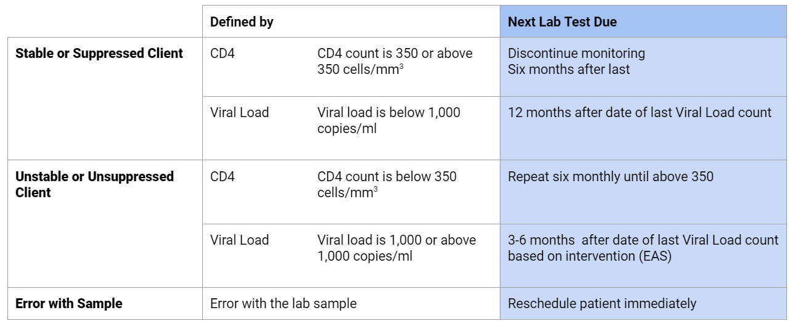

  <form autocomplete="off" novalidate="novalidate" class="or clearfix pages" dir="ltr" id="appointment">
<!--This form was created by transforming a OpenRosa-flavored (X)Form using an XSL stylesheet created by Enketo LLC.--><section class="form-logo"> </section><h3 dir="auto" id="form-title">Schedule Appointment</h3><select id="form-languages" style="display:none;" data-default-lang="en"><option value="en">en</option> </select>
  
  
    <section class="or-group or-branch pre-init or-appearance-field-list " name="/appointment/inputs" data-relevant="./source = 'user'"><h4><span lang="" class="question-label active">Schedule Appointment</span></h4><section class="or-group-data " name="/appointment/inputs/contact"><label class="question non-select or-appearance-db-object "><span lang="" class="question-label active">What is the patient's name?</span><input type="text" name="/appointment/inputs/contact/_id" data-type-xml="person"/></label><label class="question non-select or-appearance-hidden "><input type="text" name="/appointment/inputs/contact/patient_id" data-type-xml="string"/></label><label class="question non-select or-appearance-hidden "><input type="text" name="/appointment/inputs/contact/name" data-type-xml="string"/></label><label class="question non-select or-appearance-hidden "><input type="text" name="/appointment/inputs/contact/date_of_birth" data-type-xml="string"/></label><label class="question non-select or-appearance-hidden "><input type="text" name="/appointment/inputs/contact/sex" data-type-xml="string"/></label><section class="or-group-data " name="/appointment/inputs/contact/parent"><section class="or-group-data " name="/appointment/inputs/contact/parent/contact"><label class="question non-select or-appearance-hidden "><input type="text" name="/appointment/inputs/contact/parent/contact/phone" data-type-xml="string"/></label><label class="question non-select or-appearance-hidden "><input type="text" name="/appointment/inputs/contact/parent/contact/name" data-type-xml="string"/></label>
            </section><!--end of group -->
            </section><!--end of group -->
            </section><!--end of group -->
            </section><!--end of group -->
    <section class="or-group-data or-appearance-field-list " name="/appointment/appoint"><fieldset class="question simple-select "><fieldset><legend><span lang="" class="question-label active">Appointment Type</span>
                    </legend><div class="option-wrapper"><label class=""><input type="radio" name="/appointment/appoint/type_appoint" data-name="/appointment/appoint/type_appoint" value="clinical appointment" data-type-xml="select1"/><span lang="" class="option-label active">Clinical Appointment</span></label><label class=""><input type="radio" name="/appointment/appoint/type_appoint" data-name="/appointment/appoint/type_appoint" value="social worker appointment" data-type-xml="select1"/><span lang="" class="option-label active">Social Worker Appointment</span></label><label class=""><input type="radio" name="/appointment/appoint/type_appoint" data-name="/appointment/appoint/type_appoint" value="case manager appointment" data-type-xml="select1"/><span lang="" class="option-label active">Case Manager Appointment</span></label><label class=""><input type="radio" name="/appointment/appoint/type_appoint" data-name="/appointment/appoint/type_appoint" value="blood draw appointment" data-type-xml="select1"/><span lang="" class="option-label active">Blood Draw Appointment</span></label><label class=""><input type="radio" name="/appointment/appoint/type_appoint" data-name="/appointment/appoint/type_appoint" value="psychologist appointment" data-type-xml="select1"/><span lang="" class="option-label active">Psychologist Appointment</span></label><label class=""><input type="radio" name="/appointment/appoint/type_appoint" data-name="/appointment/appoint/type_appoint" value="adherence counselor appointment" data-type-xml="select1"/><span lang="" class="option-label active">Adherence Counselor Appointment</span></label><label class=""><input type="radio" name="/appointment/appoint/type_appoint" data-name="/appointment/appoint/type_appoint" value="internal referral" data-type-xml="select1"/><span lang="" class="option-label active">Internal Referral</span></label><label class=""><input type="radio" name="/appointment/appoint/type_appoint" data-name="/appointment/appoint/type_appoint" value="external referral" data-type-xml="select1"/><span lang="" class="option-label active">External Referral</span></label></div></fieldset></fieldset><label class="question non-select or-appearance-h1 or-appearance-blue "><span lang="" class="question-label active">Any notes about this Appointment?</span><input type="text" name="/appointment/appoint/welcome" data-type-xml="string"/></label><fieldset class="question simple-select or-branch pre-init "><fieldset><legend><span lang="" class="question-label active">Blood Draw:</span>
                    </legend><div class="option-wrapper"><label class=""><input type="radio" name="/appointment/appoint/lab_test" data-name="/appointment/appoint/lab_test" value="cd4 count" data-relevant=" /appointment/appoint/type_appoint  = 'blood draw appointment'" data-type-xml="select1"/><span lang="" class="option-label active">CD4 count</span></label><label class=""><input type="radio" name="/appointment/appoint/lab_test" data-name="/appointment/appoint/lab_test" value="viral load" data-relevant=" /appointment/appoint/type_appoint  = 'blood draw appointment'" data-type-xml="select1"/><span lang="" class="option-label active">Viral Load</span></label><label class=""><input type="radio" name="/appointment/appoint/lab_test" data-name="/appointment/appoint/lab_test" value="other" data-relevant=" /appointment/appoint/type_appoint  = 'blood draw appointment'" data-type-xml="select1"/><span lang="" class="option-label active">Other</span></label></div></fieldset></fieldset><label class="question or-branch pre-init non-select "><span lang="" class="question-label active">Specify other.</span><input type="text" name="/appointment/appoint/lab_test_other" data-relevant="selected(../lab_test, 'other')" data-type-xml="string"/></label><label class="question or-branch pre-init non-select "><span lang="" class="question-label active">Date of Appointment</span><input type="date" name="/appointment/appoint/date_appoint" data-relevant=" /appointment/appoint/type_appoint  != 'blood draw appointment'" data-type-xml="date"/></label><label class="question note or-branch pre-init non-select "><span lang="en" class="question-label active" data-itext-id="/appointment/appoint/image1:label">Image</span><input type="text" name="/appointment/appoint/image1" data-relevant=" /appointment/appoint/type_appoint  = 'blood draw appointment'" data-type-xml="string" readonly="readonly"/></label><label class="question or-branch pre-init non-select "><span lang="" class="question-label active">Date of Expected Blood Draw</span><input type="date" name="/appointment/appoint/date_appoint1" data-relevant=" /appointment/appoint/type_appoint  = 'blood draw appointment'" data-type-xml="date"/></label>
            </section><!--end of group -->
  
<fieldset id="or-calculated-items" style="display:none;"><label class="calculation non-select "><input type="hidden" name="/appointment/patient_id" data-calculate="../inputs/contact/patient_id" data-type-xml="string"/></label><label class="calculation non-select "><input type="hidden" name="/appointment/patient_name" data-calculate="../inputs/contact/name" data-type-xml="string"/></label><label class="calculation non-select "><input type="hidden" name="/appointment/meta/instanceID" data-calculate="concat('uuid:', uuid())" data-type-xml="string"/></label></fieldset></form>

